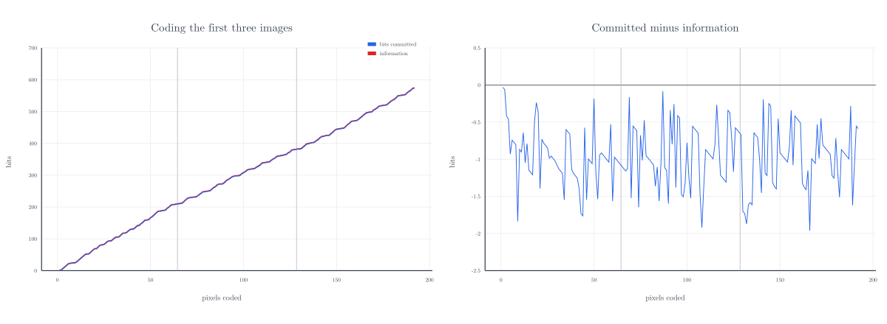
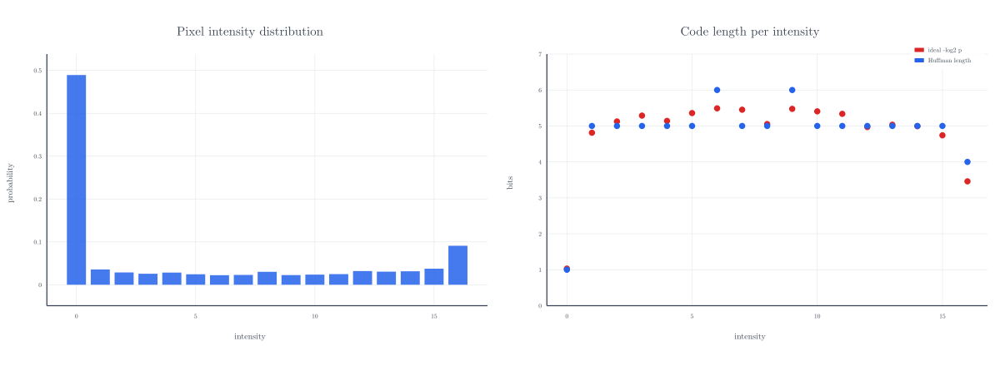
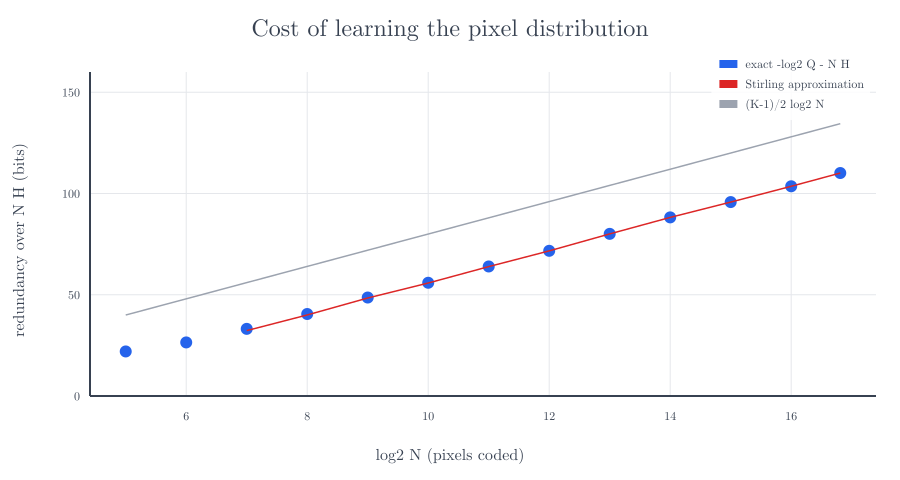
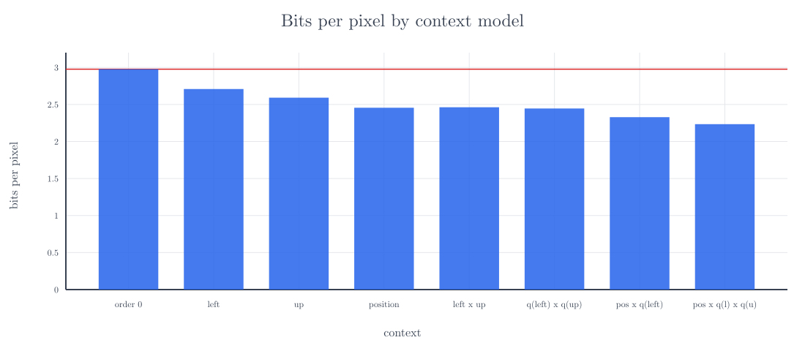
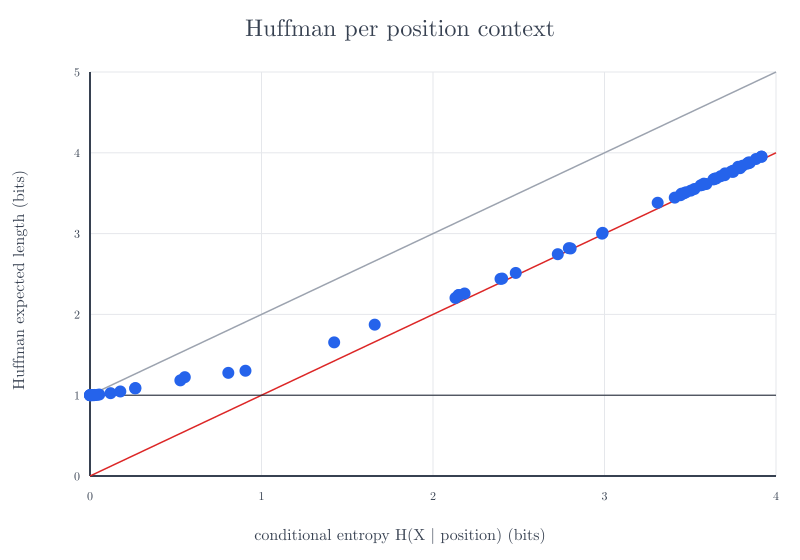

Arithmetic Coding: Fractional Bits per Symbol
Abstract
Arithmetic coding turns a whole message into one number in ([0,1
current interval by its probability, so a message of probability \(P\) needs about
\(-\log_2 P\) bits, with no rounding to whole bits per symbol. We derive this bound and then
compress the 115,008 pixel intensities of dm::datasets::digits() (values 0 to 16) with
dm::algorithms' 32-bit integer coder. With one fixed table of pixel frequencies,
arithmetic coding reaches 2.97667 bits per pixel, which is the entropy to five
decimals. Huffman coding is only 0.7% worse here, because the pixel distribution is not
very skewed. An adaptive model learns the table as it codes. We show that its code length
depends only on the final counts, and that it costs about \(\tfrac{K-1}{2}\log_2 N\) extra
bits. The coder pays off when the model is good. Predicting each pixel from its position
and its left and upper neighbours cuts the cost to 2.23 bits per pixel. In that
model many contexts are almost certain, and Huffman coding, which needs at least one bit per
symbol, would spend 2.37 bits.
)
Coding as narrowing an interval
Suppose a source emits symbols \(s\) from an alphabet of size \(K\) with probabilities \(p_s\), and list the symbols in a fixed order with cumulative probabilities \(F_s=\sum_{t<s}p_t\). Arithmetic coding starts with the interval \([0,1)\). To code a symbol, it splits the current interval \([\ell,\ell+w)\) into \(K\) pieces in proportion to the \(p_s\), and keeps the piece for the symbol that occurred:
After a message \(s_1,\dots,s_n\) the width is the product of the symbol probabilities, the probability of the whole message:
Different messages give disjoint intervals, so any number inside the final interval identifies the message. The encoder sends a short binary fraction \(0.b_1b_2\dots b_L\) whose whole dyadic interval \([0.b_1\dots b_L,\;0.b_1\dots b_L+2^{-L})\) lies inside \([\ell,\ell+w)\). This also makes the code prefix-free: no longer message can extend the bits. How long must \(L\) be? The dyadic intervals of width \(2^{-L}\) tile the line. If \(2^{-L}\le w/2\), at least one of them fits entirely inside an interval of width \(w\). The smallest such \(L\) is
\(-\log_2 P\) is the information content of the message, and Shannon's source coding theorem says no uniquely decodable code can beat it on average. So arithmetic coding comes within two bits of the ideal for the whole message, not per symbol. Averaged over the source, the cost per symbol is the entropy \(H=-\sum_s p_s\log_2 p_s\) plus \(2/n\). Huffman coding, by contrast, gives every symbol a whole number of bits \(\ell_s\), and its expected length \(\sum_s p_s\ell_s\) can be up to one bit per symbol above \(H\).
Real numbers of unbounded precision are not practical. The library's ArithmeticEncoder
keeps \(\ell\) and \(\ell+w\) as 32-bit integers \(\text{low}\) and \(\text{high}\), and
uses integer counts \(c_s\) with total \(T\) in place of the probabilities. Whenever the
interval falls entirely in the lower or upper half of the register, the leading bit of
every number in it is settled. The encoder then outputs that bit and doubles the interval
(renormalization). If the interval straddles the midpoint but sits inside the middle
half, the next bit is not yet known, but it will be followed by its opposite. The encoder
counts these pending bits and writes them once the next bit is decided
(bit-plus-follow). The decoder repeats the same arithmetic with the bits in view, so both
sides stay in step without carries. Integer rounding of the slices costs a tiny amount
compared with the real-valued coder.
Watching the interval shrink
The data are the 1,797 handwritten digits of dm::datasets::digits(). Each is an
\(8\times8\) image whose pixels hold ink intensities from 0 to 16. We read every image row
by row into one stream of 115,008 symbols (\(K=17\)), and for now model it with one fixed
table: each intensity's count over the whole stream. The block codes the first image's
first 14 pixels with dm::algorithms::arithmetic_intervals(), which tracks the real
interval exactly, and with arithmetic_bits_trace(), which records how many bits the
integer encoder has committed after each pixel. The figure follows the first three images.
#include <dm/dm.hpp>
namespace alg = dm::algorithms;
int main() {
std::filesystem::create_directories("build");
const auto digits = dm::datasets::digits();
std::vector<int> pixels;
for (std::size_t r = 0; r < digits.nrows(); ++r)
for (int i = 0; i < 64; ++i) pixels.push_back(static_cast<int>(digits.double_at(std::format("pixel_{}", i), r)));
const auto counts = alg::symbol_counts(pixels, 17);
const std::vector<std::uint32_t> freq(counts.begin(), counts.end());
const double total = static_cast<double>(pixels.size());
const std::vector<int> head(pixels.begin(), pixels.begin() + 14);
const auto intervals = alg::arithmetic_intervals(head, freq);
const auto committed = alg::arithmetic_bits_trace(head, freq);
std::print("| pixel | intensity | \\(p_s\\) | low \\(\\ell\\) | width \\(w\\) | \\(-\\log_2 w\\) | bits committed |\n"
"| ---: | ---: | ---: | ---: | ---: | ---: | ---: |\n");
for (std::size_t i = 0; i < head.size(); ++i) {
const auto [lo, hi] = intervals[i];
std::print("| {} | {} | {:.4f} | {:.15f} | {:.3e} | {:.2f} | {} |\n", i + 1, head[i], counts[head[i]] / total,
lo, hi - lo, -std::log2(hi - lo), committed[i]);
}
const std::vector<int> first(pixels.begin(), pixels.begin() + 192);
const auto trace = alg::arithmetic_bits_trace(first, freq);
std::vector<double> x, info, bits;
double cumulative = 0;
for (std::size_t i = 0; i < first.size(); ++i) {
cumulative -= std::log2(counts[first[i]] / total);
x.push_back(static_cast<double>(i + 1));
info.push_back(cumulative);
bits.push_back(static_cast<double>(trace[i]));
}
const auto coded = alg::arithmetic_encode(first, freq);
std::print("\nAfter 192 pixels: information content {:.1f} bits, bits committed {}, finished code {} bits.\n",
cumulative, trace.back(), coded.size());
std::vector<double> lag;
for (std::size_t i = 0; i < x.size(); ++i) lag.push_back(bits[i] - info[i]);
const auto [lo, hi] = std::ranges::minmax(lag);
std::print("Bits committed minus information content ranges from {:.2f} to {:.2f}.\n", lo, hi);
auto layout = dm::graphics::RLayout::create(1, 2);
layout.add(dm::graphics::RPlot::create()
.lines(x, bits, "bits committed", dm::RGB{37, 99, 235}, 3.0)
.lines(x, info, "information", dm::RGB{220, 38, 38}, 1.2)
.abline_v(64.5, dm::RGB{156, 163, 175}, 1.0)
.abline_v(128.5, dm::RGB{156, 163, 175}, 1.0)
.legend({"bits committed", "information"}, {dm::RGB{37, 99, 235}, dm::RGB{220, 38, 38}})
.y_limits(0, 700)
.title("Coding the first three images")
.x_label("pixels coded")
.y_label("bits"));
layout.add(dm::graphics::RPlot::create()
.lines(x, lag, "", dm::RGB{37, 99, 235}, 1.5)
.abline_h(0, dm::RGB{17, 24, 39}, 1.0)
.abline_v(64.5, dm::RGB{156, 163, 175}, 1.0)
.abline_v(128.5, dm::RGB{156, 163, 175}, 1.0)
.y_limits(-2.5, 0.5)
.title("Committed minus information")
.x_label("pixels coded")
.y_label("bits"));
layout.size(1200, 440).save_svg("build/arithmetic_coding_trace.svg");
}| pixel | intensity | \(p_s\) | low \(\ell\) | width \(w\) | \(-\log_2 w\) | bits committed |
|---|---|---|---|---|---|---|
| 1 | 0 | 0.4893 | 0.000000000000000 | 4.893e-01 | 1.03 | 1 |
| 2 | 0 | 0.4893 | 0.000000000000000 | 2.394e-01 | 2.06 | 2 |
| 3 | 5 | 0.0244 | 0.145438323682632 | 5.835e-03 | 7.42 | 7 |
| 4 | 13 | 0.0305 | 0.150163142924465 | 1.780e-04 | 12.46 | 12 |
| 5 | 9 | 0.0225 | 0.150289022022663 | 4.001e-06 | 17.93 | 17 |
| 6 | 1 | 0.0356 | 0.150290979856183 | 1.425e-07 | 22.74 | 22 |
| 7 | 0 | 0.4893 | 0.150290979856183 | 6.971e-08 | 23.77 | 23 |
| 8 | 0 | 0.4893 | 0.150290979856183 | 3.411e-08 | 24.81 | 24 |
| 9 | 0 | 0.4893 | 0.150290979856183 | 1.669e-08 | 25.84 | 24 |
| 10 | 0 | 0.4893 | 0.150290979856183 | 8.166e-09 | 26.87 | 26 |
| 11 | 13 | 0.0305 | 0.150290986468536 | 2.491e-10 | 31.90 | 31 |
| 12 | 15 | 0.0374 | 0.150290986685705 | 9.324e-12 | 36.64 | 36 |
| 13 | 10 | 0.0236 | 0.150290986692507 | 2.198e-13 | 42.05 | 41 |
| 14 | 15 | 0.0374 | 0.150290986692699 | 8.216e-15 | 46.79 | 46 |
After 192 pixels: information content 574.6 bits, bits committed 574, finished code 576 bits. Bits committed minus information content ranges from -1.96 to -0.03.

Each pixel multiplies the width by its probability, so \(-\log_2 w\) climbs by about one bit for each blank pixel (\(p_0=0.489\)) and by about five bits for each inked one. The encoder keeps pace. After every pixel the number of bits it has committed is the whole part of \(-\log_2 w\), or one less. The integer coder does not need the exact real interval, which is fortunate: by the 14th pixel the width is \(8\times10^{-15}\). Two pixels later it is only a few times the spacing between doubles near 0.15, and a floating-point coder would be computing mostly rounding error. After 192 pixels the information content is 574.6 bits. The encoder has committed 574 bits, and its finished code has 576, within the two-bit bound. The right panel shows that the committed bits trail the information content by between 0.03 and 1.96 bits. Those are the bits still held in the 32-bit register, which the flush writes at the end.
The pixel distribution, and Huffman's whole bits
How skewed is the source? The table lists each intensity's count and probability, its
ideal code length \(-\log_2 p_s\) and the length \(\ell_s\) of its Huffman codeword from
dm::algorithms::huffman_code_lengths(). Huffman's code is the best possible prefix code
with whole-bit lengths. It satisfies the Kraft equality \(\sum_s 2^{-\ell_s}=1\), so it
behaves as if the source had probabilities \(2^{-\ell_s}\). Its excess over the entropy is
the Kullback-Leibler divergence between the real and implied distributions:
#include <dm/dm.hpp>
namespace alg = dm::algorithms;
int main() {
std::filesystem::create_directories("build");
const auto digits = dm::datasets::digits();
std::vector<int> pixels;
for (std::size_t r = 0; r < digits.nrows(); ++r)
for (int i = 0; i < 64; ++i) pixels.push_back(static_cast<int>(digits.double_at(std::format("pixel_{}", i), r)));
const auto counts = alg::symbol_counts(pixels, 17);
const auto lengths = alg::huffman_code_lengths(counts);
const double n = static_cast<double>(pixels.size());
std::print("| intensity | count | \\(p_s\\) | \\(-\\log_2 p_s\\) | Huffman \\(\\ell_s\\) |\n"
"| ---: | ---: | ---: | ---: | ---: |\n");
std::vector<double> v, p, ideal, huff;
double expected = 0.0, kraft = 0.0;
for (int s = 0; s < 17; ++s) {
const double ps = counts[s] / n;
std::print("| {} | {} | {:.4f} | {:.2f} | {} |\n", s, counts[s], ps, -std::log2(ps), lengths[s]);
v.push_back(s);
p.push_back(ps);
ideal.push_back(-std::log2(ps));
huff.push_back(lengths[s]);
expected += ps * lengths[s];
kraft += std::ldexp(1.0, -lengths[s]);
}
const double h = alg::shannon_entropy_bits(counts);
std::print("\nEntropy H = {:.4f} bits; Huffman expected length = {:.4f} bits ({:+.2f}%); "
"Kraft sum = {}; fixed-length code = {} bits.\n",
h, expected, 100 * (expected / h - 1), kraft, static_cast<int>(std::ceil(std::log2(17.0))));
auto layout = dm::graphics::RLayout::create(1, 2);
layout.add(dm::graphics::RPlot::create()
.bars(v, p, "", dm::RGB{37, 99, 235}, 0.8)
.title("Pixel intensity distribution")
.x_label("intensity")
.y_label("probability"));
layout.add(dm::graphics::RPlot::create()
.points(v, ideal, "ideal -log2 p", dm::RGB{220, 38, 38}, 6.0)
.points(v, huff, "Huffman length", dm::RGB{37, 99, 235}, 6.0)
.legend({"ideal -log2 p", "Huffman length"}, {dm::RGB{220, 38, 38}, dm::RGB{37, 99, 235}})
.y_limits(0, 7)
.title("Code length per intensity")
.x_label("intensity")
.y_label("bits"));
layout.size(1200, 440).save_svg("build/arithmetic_coding_distribution.svg");
}| intensity | count | \(p_s\) | \(-\log_2 p_s\) | Huffman \(\ell_s\) |
|---|---|---|---|---|
| 0 | 56272 | 0.4893 | 1.03 | 1 |
| 1 | 4095 | 0.0356 | 4.81 | 5 |
| 2 | 3296 | 0.0287 | 5.12 | 5 |
| 3 | 2944 | 0.0256 | 5.29 | 5 |
| 4 | 3261 | 0.0284 | 5.14 | 5 |
| 5 | 2803 | 0.0244 | 5.36 | 5 |
| 6 | 2559 | 0.0223 | 5.49 | 6 |
| 7 | 2627 | 0.0228 | 5.45 | 5 |
| 8 | 3464 | 0.0301 | 5.05 | 5 |
| 9 | 2585 | 0.0225 | 5.48 | 6 |
| 10 | 2711 | 0.0236 | 5.41 | 5 |
| 11 | 2845 | 0.0247 | 5.34 | 5 |
| 12 | 3668 | 0.0319 | 4.97 | 5 |
| 13 | 3509 | 0.0305 | 5.03 | 5 |
| 14 | 3609 | 0.0314 | 4.99 | 5 |
| 15 | 4304 | 0.0374 | 4.74 | 5 |
| 16 | 10456 | 0.0909 | 3.46 | 4 |
Entropy H = 2.9767 bits; Huffman expected length = 2.9967 bits (+0.67%); Kraft sum = 1; fixed-length code = 5 bits.

Nearly half of all pixels (49%) are blank and 9% are fully inked. The remaining 15 intensities share the other 42% almost evenly. The entropy is 2.977 bits, well below the 5 bits of a fixed-length code and the 8 bits of the raw bytes. Huffman's integer lengths track the ideal ones closely. Blank pixels cost 1 bit against an ideal 1.03, and the middle intensities cost 5 or 6 against ideals between 4.7 and 5.5. The rounding errors partly cancel, so the expected length is 2.997 bits, only 0.67% above the entropy. This source is not skewed enough to show off arithmetic coding: no symbol is much more likely than \(1/2\).
One fixed table: arithmetic against Huffman
Now code the whole stream. We compare four costs in bits per pixel: a fixed-length code
(5 bits are needed for 17 values), Huffman's expected length, the entropy, and the actual
length of dm::algorithms::arithmetic_encode() using the counts as the model. A static
model also has to send its table to the decoder. Seventeen counts of at most 17 bits each
cost under 300 bits, or 0.003 bits per pixel, and we leave them out below.
#include <dm/dm.hpp>
namespace alg = dm::algorithms;
int main() {
const auto digits = dm::datasets::digits();
std::vector<int> pixels;
for (std::size_t r = 0; r < digits.nrows(); ++r)
for (int i = 0; i < 64; ++i) pixels.push_back(static_cast<int>(digits.double_at(std::format("pixel_{}", i), r)));
const auto counts = alg::symbol_counts(pixels, 17);
const std::vector<std::uint32_t> freq(counts.begin(), counts.end());
const double n = static_cast<double>(pixels.size());
const auto start = std::chrono::steady_clock::now();
const auto code = alg::arithmetic_encode(pixels, freq);
const auto mid = std::chrono::steady_clock::now();
const bool round_trip = alg::arithmetic_decode(code, freq, static_cast<int>(pixels.size())) == pixels;
const auto stop = std::chrono::steady_clock::now();
const auto lengths = alg::huffman_code_lengths(counts);
double huffman = 0.0;
for (int s = 0; s < 17; ++s) huffman += counts[s] * lengths[s];
const double ideal = alg::ideal_code_length(pixels, freq);
std::print("| code | total bits | bits per pixel | compressed bytes |\n| --- | ---: | ---: | ---: |\n");
auto row = [&](std::string name, double bits) {
std::print("| {} | {:.0f} | {:.5f} | {:.0f} |\n", name, bits, bits / n, std::ceil(bits / 8));
};
row("raw bytes", 8 * n);
row("fixed length (5 bits)", 5 * n);
row("Huffman", huffman);
row("ideal \\(-\\log_2 P\\) (entropy)", ideal);
row("arithmetic coder", static_cast<double>(code.size()));
std::print("\nArithmetic code minus ideal: {:.2f} bits for the whole stream. Round trip exact: {}. "
"Encode {:.1f} ms, decode {:.1f} ms.\n",
code.size() - ideal, round_trip,
std::chrono::duration<double, std::milli>(mid - start).count(),
std::chrono::duration<double, std::milli>(stop - mid).count());
}| code | total bits | bits per pixel | compressed bytes |
|---|---|---|---|
| raw bytes | 920064 | 8.00000 | 115008 |
| fixed length (5 bits) | 575040 | 5.00000 | 71880 |
| Huffman | 344640 | 2.99666 | 43080 |
| ideal \(-\log_2 P\) (entropy) | 342341 | 2.97667 | 42793 |
| arithmetic coder | 342341 | 2.97667 | 42793 |
Arithmetic code minus ideal: 0.36 bits for the whole stream. Round trip exact: true. Encode 9.1 ms, decode 9.1 ms.
The arithmetic coder lands on the ideal length: 342,341 bits against an ideal of 342,340.6. The whole stream costs 0.36 bits more than \(-\log_2 P\), which is the two-bit bound with room to spare, and the 32-bit integer slices add nothing visible. Huffman needs 2,299 bits more (0.67%). Both cut the 115,008 raw bytes to about 43 kB, a ratio of 2.7. Decoding recovers every pixel. Each direction takes a few milliseconds on this machine.
Learning the table as you go
A static model needs two passes over the data and a transmitted table. An adaptive model avoids both. Encoder and decoder start from the same counts, all equal to one, and update them after every symbol. Before symbol \(i+1\), with \(n_s\) earlier occurrences of each symbol out of \(i\), symbol \(s\) gets Laplace's rule-of-succession probability
The code length depends only on the counts
Multiply these probabilities over a message of length \(N\) with final counts \(n_s\). The denominators run through \(K, K+1, \dots, N+K-1\) whatever the order. The numerators for symbol \(s\) run through \(1, 2, \dots, n_s\), however its occurrences are spread out. So
This has a clean reading as a two-part code. The first term is the cost of sending the
counts: there are \(\binom{N+K-1}{K-1}\) ways to split \(N\) into \(K\) counts. The second
is the cost of saying which of the \(N!/\prod_s n_s!\) orderings with those counts occurred.
dm::algorithms::adaptive_code_length() evaluates it exactly. Stirling's formula,
\(\log n!\approx n\log n-n+\tfrac12\log(2\pi n)\), turns it into the redundancy over the
empirical entropy \(\hat H\) of the message:
adaptive_redundancy_approx() evaluates this approximation. The leading term is the famous
\(\tfrac{K-1}{2}\log_2 N\): each of the \(K-1\) free parameters costs about half a log of
the sample size, the same price as in Rissanen's minimum description length and in BIC. Per
symbol, the cost of learning falls like \(\log N/N\). The block codes growing prefixes of
the pixel stream adaptively and compares the encoder's length with the exact formula and
with the approximation.
#include <dm/dm.hpp>
namespace alg = dm::algorithms;
int main() {
std::filesystem::create_directories("build");
const auto digits = dm::datasets::digits();
std::vector<int> pixels;
for (std::size_t r = 0; r < digits.nrows(); ++r)
for (int i = 0; i < 64; ++i) pixels.push_back(static_cast<int>(digits.double_at(std::format("pixel_{}", i), r)));
std::print("| \\(N\\) | \\(\\hat H\\) | \\(N\\hat H\\) | exact \\(-\\log_2 Q\\) | coder bits | "
"redundancy | Stirling approximation |\n| ---: | ---: | ---: | ---: | ---: | ---: | ---: |\n");
std::vector<double> log_n, redundancy, approx_x, approx;
std::vector<std::size_t> sizes;
for (std::size_t n = 32; n < pixels.size(); n *= 2) sizes.push_back(n);
sizes.push_back(pixels.size());
for (std::size_t n : sizes) {
const std::vector<int> prefix(pixels.begin(), pixels.begin() + static_cast<std::ptrdiff_t>(n));
const auto counts = alg::symbol_counts(prefix, 17);
const double h = alg::shannon_entropy_bits(counts);
const double exact = alg::adaptive_code_length(counts);
const auto bits = alg::arithmetic_encode_adaptive(prefix, 17).size();
const bool all_seen = std::ranges::all_of(counts, [](auto c) { return c > 0; });
const double r = exact - n * h;
log_n.push_back(std::log2(static_cast<double>(n)));
redundancy.push_back(r);
std::string a = "(some count is 0)";
if (all_seen) {
const double ar = alg::adaptive_redundancy_approx(counts);
approx_x.push_back(std::log2(static_cast<double>(n)));
approx.push_back(ar);
a = std::format("{:.1f}", ar);
}
std::print("| {} | {:.3f} | {:.1f} | {:.1f} | {} | {:.1f} | {} |\n", n, h, n * h, exact, bits, r, a);
}
std::vector<double> lead;
for (double l : log_n) lead.push_back(8.0 * l);
dm::graphics::RPlot::create()
.points(log_n, redundancy, "exact", dm::RGB{37, 99, 235}, 6.0)
.lines(approx_x, approx, "Stirling approximation", dm::RGB{220, 38, 38}, 1.5)
.lines(log_n, lead, "(K-1)/2 log2 N", dm::RGB{156, 163, 175}, 1.5)
.legend({"exact -log2 Q - N H", "Stirling approximation", "(K-1)/2 log2 N"},
{dm::RGB{37, 99, 235}, dm::RGB{220, 38, 38}, dm::RGB{156, 163, 175}})
.title("Cost of learning the pixel distribution")
.x_label("log2 N (pixels coded)")
.y_label("redundancy over N H (bits)")
.y_limits(0, 160)
.size(900, 480)
.save_svg("build/arithmetic_coding_adaptive.svg");
}| \(N\) | \(\hat H\) | \(N\hat H\) | exact \(-\log_2 Q\) | coder bits | redundancy | Stirling approximation |
|---|---|---|---|---|---|---|
| 32 | 2.912 | 93.2 | 115.2 | 116 | 22.0 | (some count is 0) |
| 64 | 3.039 | 194.5 | 220.9 | 222 | 26.5 | (some count is 0) |
| 128 | 2.943 | 376.7 | 409.8 | 411 | 33.2 | 32.3 |
| 256 | 2.977 | 762.2 | 802.7 | 804 | 40.5 | 40.0 |
| 512 | 2.901 | 1485.5 | 1534.1 | 1535 | 48.6 | 48.4 |
| 1024 | 2.982 | 3053.9 | 3109.8 | 3111 | 55.9 | 55.8 |
| 2048 | 2.949 | 6038.8 | 6102.8 | 6104 | 64.0 | 63.9 |
| 4096 | 2.969 | 12160.2 | 12231.9 | 12233 | 71.7 | 71.7 |
| 8192 | 2.912 | 23851.3 | 23931.3 | 23933 | 80.1 | 80.1 |
| 16384 | 2.906 | 47617.6 | 47705.8 | 47707 | 88.2 | 88.2 |
| 32768 | 2.963 | 97105.6 | 97201.4 | 97202 | 95.8 | 95.8 |
| 65536 | 2.987 | 195785.2 | 195888.7 | 195890 | 103.6 | 103.6 |
| 115008 | 2.977 | 342340.6 | 342450.8 | 342452 | 110.1 | 110.1 |

The encoder's length is always within two bits of the exact formula, for example 342,452 bits against \(-\log_2 Q=342{,}450.8\) for the full stream. The order-independence argument involves no approximation. Once every intensity has occurred, from \(N=128\) on, the Stirling approximation agrees with the exact redundancy to within 1 bit, and to 0.1 bits from \(N=1024\). Each doubling of \(N\) adds about 8 bits, which is \(\tfrac{K-1}{2}=8\) as predicted. The lower-order terms keep the curve about 25 bits below the leading term. Over the whole stream, learning the table costs 110 bits, or 0.001 bits per pixel, less than the 300 bits a static model would need to send its table.
Context models: where the fractional bits pay off
An order-0 model, adaptive or not, can never beat the entropy of the pixel distribution, about 2.98 bits. To do better the model must predict, giving each pixel a distribution that depends on what the decoder has already seen. Let \(C\) be a context: any function of the earlier pixels. If we keep one adaptive table per context, the code length is the sum, over contexts, of the adaptive length of the pixels coded in that context. Dividing by \(N\) and letting \(N\) grow, this tends to the conditional entropy
so every context helps, by the mutual information between the context and the pixel. But
each context also pays its own \(\tfrac{K-1}{2}\log_2 n_c\) learning cost, so too many
contexts spread the data too thin (context dilution). The decoder must be able to compute
the context, so it may only look at pixels already decoded. arithmetic_encode_adaptive()
takes the context as a function of the history, and context_counts() returns the counts
in each context. From those we compute the conditional entropy and the predicted length
\(\sum_c\) adaptive_code_length\((n_{c,\cdot})\).
The contexts below use what a digit image offers. The left and upper neighbours are taken as 0 at the image edges. The position is the pixel's index 0 to 63 within its image: the corners of a centred digit are nearly always blank. Quantized neighbours map an intensity to four levels: 0, 1 to 5, 6 to 11, and 12 to 16.
#include <dm/dm.hpp>
namespace alg = dm::algorithms;
int main() {
std::filesystem::create_directories("build");
const auto digits = dm::datasets::digits();
std::vector<int> pixels;
for (std::size_t r = 0; r < digits.nrows(); ++r)
for (int i = 0; i < 64; ++i) pixels.push_back(static_cast<int>(digits.double_at(std::format("pixel_{}", i), r)));
const double n = static_cast<double>(pixels.size());
// Contexts may look only at the pixels already coded (the history).
auto left = [](const std::vector<int>& h) { return h.size() % 8 != 0 ? h[h.size() - 1] : 0; };
auto up = [](const std::vector<int>& h) { return h.size() % 64 >= 8 ? h[h.size() - 8] : 0; };
auto position = [](const std::vector<int>& h) { return static_cast<int>(h.size() % 64); };
auto level = [](int v) { return v == 0 ? 0 : v <= 5 ? 1 : v <= 11 ? 2 : 3; };
struct Model {
std::string name;
alg::ArithmeticContextFunction context;
std::size_t contexts;
};
const std::vector<Model> models = {
{"none (order 0)", {}, 1},
{"left", left, 17},
{"up", up, 17},
{"position", position, 64},
{"left x up", [&](const auto& h) { return left(h) * 17 + up(h); }, 289},
{"quantized left x up", [&](const auto& h) { return level(left(h)) * 4 + level(up(h)); }, 16},
{"position x quantized left", [&](const auto& h) { return position(h) * 4 + level(left(h)); }, 256},
{"position x quantized left x up",
[&](const auto& h) { return position(h) * 16 + level(left(h)) * 4 + level(up(h)); }, 1024},
};
std::print("| context | contexts | \\(H(X\\mid C)\\) | predicted | coder | learning cost | bytes | "
"ratio to raw | round trip |\n| --- | ---: | ---: | ---: | ---: | ---: | ---: | ---: | --- |\n");
std::vector<double> x, bpp;
std::vector<std::string> labels;
for (std::size_t m = 0; m < models.size(); ++m) {
const auto& model = models[m];
const auto table = alg::context_counts(pixels, 17, model.context, model.contexts);
double conditional = 0.0, predicted = 0.0;
for (const auto& row : table) {
double nc = 0.0;
for (auto c : row) nc += static_cast<double>(c);
conditional += nc * alg::shannon_entropy_bits(row);
predicted += alg::adaptive_code_length(row);
}
const auto code = alg::arithmetic_encode_adaptive(pixels, 17, model.context, model.contexts);
const bool ok = alg::arithmetic_decode_adaptive(code, 17, static_cast<int>(pixels.size()), model.context,
model.contexts) == pixels;
const double bits = static_cast<double>(code.size());
std::print("| {} | {} | {:.4f} | {:.4f} | {:.4f} | {:.4f} | {:.0f} | {:.2f} | {} |\n", model.name, model.contexts,
conditional / n, predicted / n, bits / n, (bits - conditional) / n, std::ceil(bits / 8),
8 * n / bits, ok);
x.push_back(static_cast<double>(m + 1));
bpp.push_back(bits / n);
labels.push_back(model.name);
}
std::vector<double> pos;
for (double v : x) pos.push_back(v);
dm::graphics::RPlot::create()
.bars(x, bpp, "", dm::RGB{37, 99, 235}, 0.7)
.abline_h(alg::shannon_entropy_bits(alg::symbol_counts(pixels, 17)), dm::RGB{220, 38, 38}, 1.5)
.x_ticks(pos, {"order 0", "left", "up", "position", "left x up", "q(left) x q(up)", "pos x q(left)",
"pos x q(l) x q(u)"})
.y_limits(0, 3.2)
.title("Bits per pixel by context model")
.x_label("context")
.y_label("bits per pixel")
.size(1100, 480)
.save_svg("build/arithmetic_coding_contexts.svg");
}| context | contexts | \(H(X\mid C)\) | predicted | coder | learning cost | bytes | ratio to raw | round trip |
|---|---|---|---|---|---|---|---|---|
| none (order 0) | 1 | 2.9767 | 2.9776 | 2.9776 | 0.0010 | 42807 | 2.69 | true |
| left | 17 | 2.6982 | 2.7087 | 2.7087 | 0.0105 | 38941 | 2.95 | true |
| up | 17 | 2.5819 | 2.5918 | 2.5918 | 0.0099 | 37260 | 3.09 | true |
| position | 64 | 2.4127 | 2.4559 | 2.4559 | 0.0432 | 35306 | 3.26 | true |
| left x up | 289 | 2.3744 | 2.4625 | 2.4625 | 0.0881 | 35402 | 3.25 | true |
| quantized left x up | 16 | 2.4355 | 2.4458 | 2.4458 | 0.0103 | 35161 | 3.27 | true |
| position x quantized left | 256 | 2.2237 | 2.3286 | 2.3286 | 0.1049 | 33476 | 3.44 | true |
| position x quantized left x up | 1024 | 2.0220 | 2.2342 | 2.2342 | 0.2121 | 32119 | 3.58 | true |

Every context beats the order-0 entropy, and the coder always matches the predicted
length \(\sum_c\) adaptive_code_length to the bit. A pixel resembles the one
above it more than the one to its left (2.59 against 2.71 bits). The position alone, at
2.46 bits, is better than either neighbour.
The two left-by-up models show context dilution. Using both neighbours at full resolution gives 289 contexts and the lowest conditional entropy of the pair, 2.374 bits. But it pays 0.088 bits per pixel to learn them, and ends at 2.463 bits. Quantizing each neighbour to four levels keeps only 16 contexts, gives up 0.06 bits of conditional entropy, and pays just 0.010 bits to learn, so it wins at 2.446. The best model combines the position with the two quantized neighbours. Its 1,024 contexts have a conditional entropy of only 2.022 bits but cost 0.212 bits per pixel to learn, so it codes at 2.234 bits per pixel. That is 25% below the order-0 coder, and a compression ratio of 3.58 on the raw bytes. More data per context would bring the cost closer to the 2.02 bits.
Why a whole-bit code cannot keep up
A context model makes many conditional distributions extremely skewed. In the first pixel of an image, intensity 0 is almost certain. Its information content is a small fraction of a bit, but a Huffman code must still spend at least one bit on it. To see the size of the effect, give Huffman the most favourable setting: a separate optimal code for each context, built from that context's final counts, with the tables sent for free. The figure plots, for each of the 64 position contexts, the conditional entropy against the Huffman code's expected length.
#include <dm/dm.hpp>
namespace alg = dm::algorithms;
int main() {
std::filesystem::create_directories("build");
const auto digits = dm::datasets::digits();
std::vector<int> pixels;
for (std::size_t r = 0; r < digits.nrows(); ++r)
for (int i = 0; i < 64; ++i) pixels.push_back(static_cast<int>(digits.double_at(std::format("pixel_{}", i), r)));
const double n = static_cast<double>(pixels.size());
auto left = [](const std::vector<int>& h) { return h.size() % 8 != 0 ? h[h.size() - 1] : 0; };
auto up = [](const std::vector<int>& h) { return h.size() % 64 >= 8 ? h[h.size() - 8] : 0; };
auto position = [](const std::vector<int>& h) { return static_cast<int>(h.size() % 64); };
auto level = [](int v) { return v == 0 ? 0 : v <= 5 ? 1 : v <= 11 ? 2 : 3; };
// Totals over all contexts: conditional entropy against per-context Huffman codes.
auto compare = [&](const std::vector<std::vector<std::uint64_t>>& table, std::vector<double>* h_out,
std::vector<double>* l_out) {
double entropy = 0.0, huffman = 0.0;
for (const auto& row : table) {
double nc = 0.0;
for (auto c : row) nc += static_cast<double>(c);
if (nc == 0.0) continue;
const auto lengths = alg::huffman_code_lengths(row);
double bits = 0.0;
for (std::size_t s = 0; s < row.size(); ++s) bits += static_cast<double>(row[s]) * lengths[s];
const double h = alg::shannon_entropy_bits(row);
entropy += nc * h;
huffman += bits;
if (h_out) {
h_out->push_back(h);
l_out->push_back(bits / nc);
}
}
return std::pair{entropy / n, huffman / n};
};
std::vector<double> h, l;
const auto by_position = compare(alg::context_counts(pixels, 17, position, 64), &h, &l);
const auto full = compare(alg::context_counts(pixels, 17,
[&](const auto& c) {
return position(c) * 16 + level(left(c)) * 4 + level(up(c));
},
1024),
nullptr, nullptr);
std::print("| context | \\(H(X\\mid C)\\) | per-context Huffman | Huffman excess |\n| --- | ---: | ---: | ---: |\n");
std::print("| position | {:.4f} | {:.4f} | {:+.1f}% |\n", by_position.first, by_position.second,
100 * (by_position.second / by_position.first - 1));
std::print("| position x quantized left x up | {:.4f} | {:.4f} | {:+.1f}% |\n", full.first, full.second,
100 * (full.second / full.first - 1));
std::size_t below_one = 0;
for (double v : h) below_one += v < 1.0;
std::print("\n{} of the 64 position contexts have conditional entropy below 1 bit.\n", below_one);
dm::graphics::RPlot::create()
.points(h, l, "", dm::RGB{37, 99, 235}, 6.0)
.abline(0, 1, dm::RGB{220, 38, 38}, 1.5)
.abline(1, 1, dm::RGB{156, 163, 175}, 1.5)
.abline_h(1, dm::RGB{17, 24, 39}, 1.0)
.x_limits(0, 4)
.y_limits(0, 5)
.title("Huffman per position context")
.x_label("conditional entropy H(X | position) (bits)")
.y_label("Huffman expected length (bits)")
.size(800, 560)
.save_svg("build/arithmetic_coding_huffman.svg");
}| context | \(H(X\mid C)\) | per-context Huffman | Huffman excess |
|---|---|---|---|
| position | 2.4127 | 2.6862 | +11.3% |
| position x quantized left x up | 2.0220 | 2.3715 | +17.3% |
18 of the 64 position contexts have conditional entropy below 1 bit.

Where a context is uncertain, above about 2 bits, Huffman follows the entropy line almost exactly, as it did for the whole stream. But 18 of the 64 positions have conditional entropy below one bit. They are the leftmost and rightmost columns, plus one pixel next to each in the top and bottom rows: the digits are centred and narrower than the frame, so these pixels are nearly always blank. There Huffman sits on its one-bit floor while arithmetic coding pays close to the entropy. Summed over the stream, per-context Huffman needs 11.3% more bits than the conditional entropy for the position model. For the best model, whose contexts are even more certain, the excess grows to 17.3%: 2.372 bits per pixel against 2.022. This is more than the adaptive arithmetic coder actually spends (2.234 bits), even though Huffman was given each context's true counts and free tables. The better the model, the more of its gain only an arithmetic coder can turn into fewer bits.
Summary
- An arithmetic code for a message of probability \(P\) has fewer than \(-\log_2 P+2\) bits. On the 115,008 digit pixels the 32-bit integer coder came within 0.36 bits of the ideal length.
- With a single fixed table, Huffman coding is only 0.67% worse, because no pixel intensity has probability much above \(1/2\).
- An adaptive Laplace model costs exactly \(\log_2\binom{N+K-1}{K-1}+\log_2\frac{N!}{\prod n_s!}\) bits, whatever the order of the symbols. That is about \(\tfrac{K-1}{2}\log_2 N\) bits more than the empirical entropy, 110 bits for the whole stream.
- Context models trade information against learning cost. Predicting from the position and the quantized left and upper neighbours reaches 2.23 bits per pixel, 25% less than any context-free model, while the full-resolution neighbours lose to their quantized versions.
- Good contexts make distributions skewed, and there whole-bit codes waste up to a bit per symbol. Per-context Huffman codes, even with free tables, would spend 17% more than the conditional entropy.
Character and relatives
Arithmetic coding is the entropy coder inside JPEG's optional arithmetic mode, JPEG 2000, JBIG2 (for bilevel images, with context models much like ours), and H.264/H.265 as CABAC. Range coding is the same idea renormalized a byte at a time. Asymmetric numeral systems (ANS, used in Zstandard and LZFSE) reach the same compression with table lookups, at Huffman-like speed. Each symbol costs \(O(1)\) arithmetic plus a model lookup. The adaptive model here searches its counts linearly, \(O(K)\) per symbol; a Fenwick tree makes that \(O(\log K)\) for large alphabets.